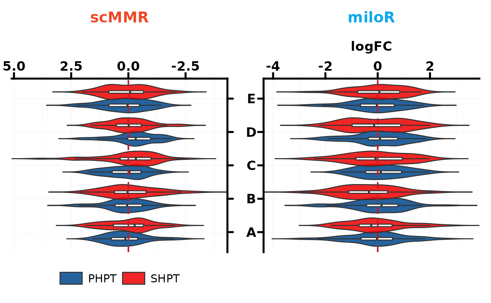
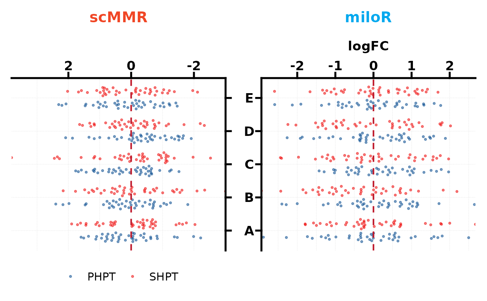
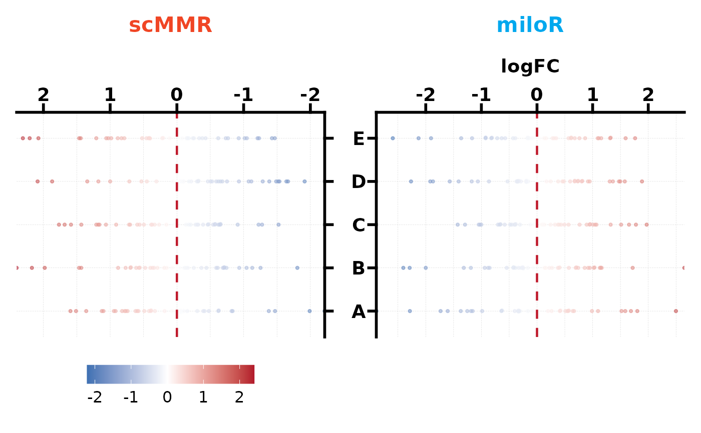

Create a butterfly (back-to-back) plot from a single long-format data frame.
The group.by column (exactly 2 levels) defines the left/right panels.
An optional fill.by column adds a dodge dimension.
Usage
PlotButterfly2(
data,
stat.by = NULL,
value.by = NULL,
group.by = NULL,
fill.by = NULL,
type = c("violin_box", "violin", "box", "beeswarm", "beeswarm_quasirandom"),
levels = NULL,
palette = NULL,
alpha = 0.85,
box.width = 0.15,
add_point = FALSE,
pt.size = 0.8,
pt.alpha = 0.5,
violin.scale = "width",
dodge.width = 0.8,
color_by = c("fixed", "logFC"),
fixed_color = "#f33131",
gradient_colors = c("#2166AC", "white", "#B2182B"),
cex = 0.3,
ref.line = NULL,
ref.color = "#bf1a2c",
text.colors = NULL,
left.title = NULL,
right.title = NULL,
left.title.color = "#f04625",
right.title.color = "#00a8ee",
title = NULL,
xlab = NULL,
base_size = 14,
legend.position = "bottom",
legend_theme = NULL,
width = 12,
height = 8,
filename = NULL
)Arguments
- data
Data frame in long format. Each row is one observation.
- stat.by
Character. Column for the y-axis categories.
- value.by
Character. Column for the continuous x-axis value.
- group.by
Character. Column defining the left/right panels (must have exactly 2 unique levels).
- fill.by
Character or
NULL. Column for dodge grouping. DefaultNULL.- type
Chart type:
"violin_box"(default),"violin","box","beeswarm", or"beeswarm_quasirandom".- levels
Display order for y-axis categories. One of:
NULL(default),"up"(ascending by mean),"down"(descending), or a character vector.- palette
Colour palette for
fill.bylevels. DefaultNULLusespal_lancet.- alpha
Numeric 0–1. Fill/point transparency. Default 0.85.
- box.width
Numeric. Boxplot width. Default 0.15.
- add_point
Logical. Overlay jittered points (violin/box modes)? Default
FALSE.- pt.size
Numeric. Point size. Default 0.8.
- pt.alpha
Numeric. Point alpha. Default 0.5.
- violin.scale
Character. How violin widths are scaled:
"width"(default),"area", or"count".- dodge.width
Numeric. Dodge width. Default 0.8.
- color_by
Character. Beeswarm colouring mode when
fill.by = NULL:"fixed"(default, single colour) or"logFC"(gradient byvalue.by).- fixed_color
Character. Point colour for
color_by = "fixed". Default"#f33131".- gradient_colors
Character vector of length 3 (low, mid, high) for
color_by = "logFC". Defaultc("#2166AC", "white", "#B2182B").- cex
Numeric. Beeswarm point spacing (passed to
geom_beeswarm). Default 0.3.- ref.line
Numeric or
NULL. Reference line. DefaultNULL.- ref.color
Character. Reference line colour. Default
"#bf1a2c".- text.colors
Character vector. Per-variable y-axis colours. Default
NULL.- left.title, right.title
Character. Panel titles. Default
NULL(auto fromgroup.bylevels).- left.title.color, right.title.color
Character. Title colours. Default
"#f04625"/"#00a8ee".- title
Character. Overall title. Default
NULL.- xlab
Character. X-axis label. Default
NULL.- base_size
Numeric. Base font size. Default 14.
- legend.position
Legend position. Default
"bottom".- legend_theme
A ggplot2 theme object. Default
NULL.- width, height
Numeric. Output size in inches. Default 12 / 8.
- filename
Character or
NULL. Save path. DefaultNULL.
Details
Five plot types are available:
"violin_box": violin + boxplot overlay (default)."violin": violin only."box": boxplot only."beeswarm": deterministic beeswarm points (geom_beeswarm)."beeswarm_quasirandom": quasi-random beeswarm points (geom_quasirandom).
See also
Other plot:
PlotButterfly(),
PlotRankCor(),
plt_cat(),
plt_cohen(),
plt_con(),
plt_dist(),
plt_radar(),
plt_sankey(),
plt_upset()
Examples
set.seed(1)
df <- data.frame(
celltype = rep(LETTERS[1:5], each = 40, times = 4),
logFC = rnorm(800),
method = rep(rep(c("scMMR", "miloR"), each = 200), 2),
comparison = rep(c("PHPT", "SHPT"), each = 400)
)
# Violin + boxplot (default)
PlotButterfly2(df, stat.by = "celltype", value.by = "logFC",
group.by = "method", fill.by = "comparison",
ref.line = 0)
#> Warning: Vectorized input to `element_text()` is not officially supported.
#> ℹ Results may be unexpected or may change in future versions of ggplot2.

# Beeswarm with dodge
PlotButterfly2(df, stat.by = "celltype", value.by = "logFC",
group.by = "method", fill.by = "comparison",
type = "beeswarm_quasirandom", ref.line = 0)
#> Warning: Vectorized input to `element_text()` is not officially supported.
#> ℹ Results may be unexpected or may change in future versions of ggplot2.
#> Orientation inferred to be along y-axis; override with
#> `position_quasirandom(orientation = 'x')`
#> Orientation inferred to be along y-axis; override with
#> `position_quasirandom(orientation = 'x')`

# Beeswarm with gradient colour
PlotButterfly2(df[df$comparison == "PHPT", ],
stat.by = "celltype", value.by = "logFC",
group.by = "method", type = "beeswarm",
color_by = "logFC", ref.line = 0)
#> Warning: Vectorized input to `element_text()` is not officially supported.
#> ℹ Results may be unexpected or may change in future versions of ggplot2.
#> Orientation inferred to be along y-axis; override with
#> `position_beeswarm(orientation = 'x')`
#> Orientation inferred to be along y-axis; override with
#> `position_beeswarm(orientation = 'x')`
